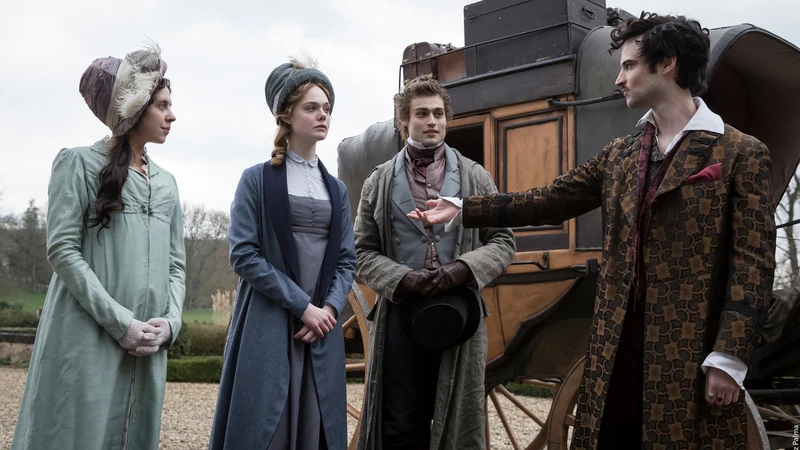
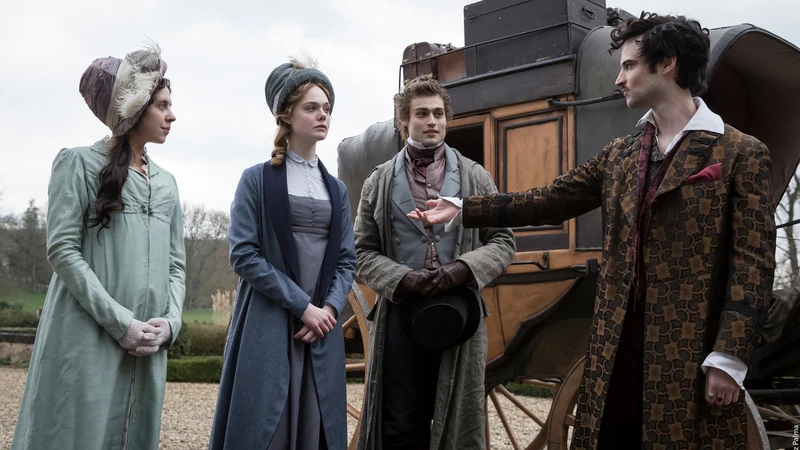

Art and Aesthetic in the Academy
We explore the intersection of cinema, literature, and classical inspiration, uncovering the beauty and intellect within artistic expression. From timeless works to modern adaptations, art shapes thought and imagination.

 

Featured Frames
Scenes from films and literary adaptations that inspire reflection, imagination, and the academic spirit in art.
Quotes from Artists and Thinkers
“Art enables us to find ourselves and lose ourselves at the same time.”
— Thomas Merton
“The aim of art is to represent not the outward appearance of things, but their inward significance.”
— Aristotle
“Imagination is the beginning of creation.”
— George Bernard Shaw
“The artist is not a special kind of person; rather, each person is a special kind of artist.”
— Ananda Coomaraswamy
Dead Poets Society
Dead Poets Society
Celebrating poetry, passion and the awakening of thought in academic life.
Good Will Hunting
A story of intellect, mentorship, and the transformative power of education.
Pride and Prejudice
A timeless tale combining societal observation, character insight, and literary elegance.
Mary Shelley
Exploring imagination, creation and the moral questions within human ingenuity.

Sherlock Holmes
Iconic detective stories highlighting intellect, deduction, and the art of observation.